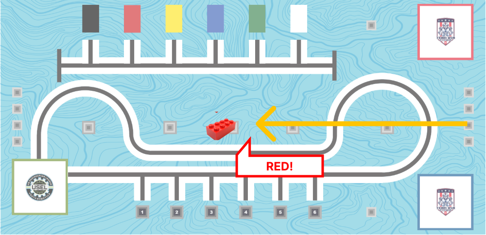
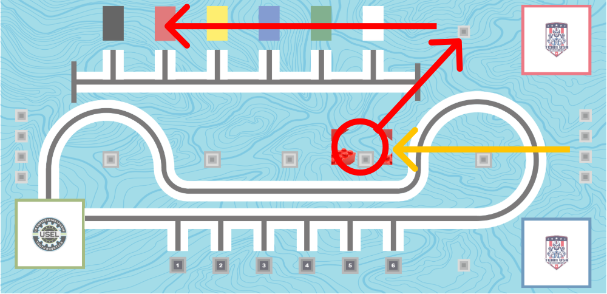

By the end of this lesson, you will master AI-assisted color sensor programming
Key Points
🟥
Detect Colors
React to colors in the environment
📦
Color Sorting
Identify and categorize objects by color
💡
Detect Light Intensity
Crucial for making the robot follow a line!
Assessment Focus: You'll demonstrate mastery by creating AI prompts that generate working color sensor programs and explaining the difference between color detection and light intensity measurement modes.
Slide 3 / 7
Understanding the Color Sensor
🌈 How the LEGO Color Sensor Works
The color sensor has TWO powerful detection modes you can use in your programs!
🎨 Color Detection Mode
What it does: Identifies specific colors
Returns: Color name (red, blue, green, yellow, etc.)
Use cases:
Sort objects by color
Follow colored lines
React to color signals
Range: Best at 1-3 cm distance
💡 Light Intensity Mode
What it does: Measures brightness levels
Returns: Number from 0 (dark) to 100 (bright)
Use cases:
Line following (black vs white)
Edge detection
Light/dark room detection
Range: Works up to 5 cm distance
📝 Programming Examples
1
# Color Detection Mode
2
import color_sensor
3
import runloop
4
5
async def detect_color():
6
color = await color_sensor.color('A')
7
if color == 'red':
8
print("Stop! Red detected!")
9
elif color == 'green':
10
print("Go! Green detected!")
1
# Light Intensity Mode
2
import color_sensor
3
import runloop
4
5
async def check_brightness():
6
intensity = await color_sensor.reflection('A')
7
if intensity < 30:
8
print("Dark surface detected")
9
elif intensity > 70:
10
print("Bright surface detected")
Color Detection Visual Example
R
G
B
Y
Detects: Red, Green, Blue, Yellow, White, Black, etc.
Light Intensity Scale Example
Scale: 0 (Dark) → 30 → 70 → 100 (Bright)
Slide 4 / 7
🧠 AI Prompt: Basic Color Detection
🎯 Your Programming Command to AI Assistant
Write Python code for LEGO SPIKE color detection using the sensor on Port A.
REQUIREMENTS:
- Create a function that reads colors
- Make it respond to at least 3 different colors (red, green, blue)
SPECIFIC RESPONSES NEEDED:
- Red: "Emergency stop activated!"
- Green: "All systems go!"
- Blue: "Water detected!"
- Other colors: "Unknown color detected"
📝 Example Student Prompt
Student's Example Command:
"Can you please write me a code that will make it say 'stop' when it detects red, 'go' when it detects green, and 'water' when it detects blue."
Slide 5 / 7
🐠 Teacher Challenge: Fish Spotter
Your fishing boat is out at sea! The fish are swimming and are different colors, and your boat needs to find the right kind! Scan them and record what colored fish are there so you can come back for them!

🚧 Mission Specification
Challenge: Starting in between the red and blue starting squares, move in a straight line until you sense the designated color, stop the robot, and print the color.
🎯 Mission Parameters
Starting Position: Between the red and blue starting squares
Target Zone: Next to the designated block
Success Criteria: Detect the colors with the color sensor, and stop the robot along with printing the color in the console once found.
💡 Navigation Strategy
Keep the robot arm raised to use the color sensor; raising the arm by 45 degrees is usually a good angle but try and see if there is a better angle.
🤖 Programming Approach
🌊 Movement Sequence Planning
Step 1: Raise the robot arm to use the color sensor before moving. Step 2: Have the robot keep moving forward until your assigned color is detected. Step 3: Test and adjust your path, adjust robot arm positioning as needed. Step 4: Execute the full navigation sequence
Student's Example Command:
"Raise my robot arm up clockwise by 45 degrees. Have it move forward until the color sensor see red. Then, stop the robot and print in the console 'red detected.' "
🛡️ Safety Protocol
⚠️ Remember to stop the robot once it finds the color.
🔄 Multiple attempts encouraged
📏 Trial and error is the best for this situation
🤝 Team collaboration recommended
Slide 6 / 7
🌊 Student Challenge: Deliver the color!
You’re heading back to pick up the fish for the day. Take your boat straight out and find the colored fish that you've been assigned to catch today and bring them back to your starting dock.

🚧 Mission Specification
Challenge: Starting in between the Red and Blue starting squares, move in a straight line until you sense the designated color and bring it to the same color filled rectangle.
🎯 Mission Parameters
Starting Position: Between the red and blue starting squares
Target Zone: Rectangle that is the same color as your designated color
Success Criteria: Bring the correct colored block to the correct colored rectangle
💡 Navigation Strategy
Once the block has been grabbed, drive the robot to the end of the rectangles and use the color sensor to detect the correct rectangle as you drive forward.
🤖 Programming Approach
🌊 Movement Sequence Planning
Step 1: Raise your robot arm to use the color sensor. Have the robot keep moving forward until your assigned color is detected. Step 2: Grab the block (drive forward and lower the arm) and drive to the end of the rectangles. Step 3: Move forward until the correct rectangle is detected. Step 4: Adjust values and path as needed.
Student's Example Command:
"Raise my robot arm up clockwise by 45 degrees. Have it move forward until the color sensor see red. Then, stop the robot and print in the console 'red detected.' "
🛡️ Safety Protocol
⚠️ Remember to stop the robot once it finds the color.
🔄 Multiple attempts encouraged
📏 Trial and error is the best for this situation
🤝 Team collaboration recommended
Slide 7 / 7
🎓 Course Complete - Color Sensor Expert!
🏆 Congratulations!
You've completed the LEGO SPIKE Color Sensor programming course. You can now create sophisticated AI prompts for both basic color detection and advanced sensor integration projects.
What You've Mastered Today
✅
Color detection programming
✅
Light intensity measurement
✅
AI prompt engineering for sensors
✅
Error handling and robustness
✅
Real-time data processing
✅
Professional code structure
Coming Up Next
📡
Ultrasonic Distance Sensors
🎯
Distance measurement programming
🎯
Obstacle detection and avoidance
🎯
AI prompts for proximity sensing
🎯
Multi-sensor integration projects
🎯
Advanced robotics navigation
Ready for Your Next Challenge?
🤖
Smart Navigation
Robots that navigate autonomously using distance sensing
🛡️
Collision Avoidance
Prevent accidents with intelligent obstacle detection
🎯
Multi-Sensor Fusion
Combine color and distance data for advanced behaviors